来源：https://p03a4vs9s2.feishu.cn/docx/Re2PdelRboSTx1xYtrTcxYRZncd
哈喽，我是叁斤，公众号：叁斤
我2020年开始接触小红书，之前做好物分享矩阵账号，也分享过：
小红书接广越来越严格后（合作得走蒲公英），我开始转型做个人IP账号和小红书电商，一直在小红书赛道
但是我老婆还是很想做好物分享号，毕竟能免费拿到很多大牌的产品，可开心了。后来通过商家推荐入驻了得物
在测试时，同步了小红书的视频，发现收益还不错，一条53赞的视频有72块钱收益！
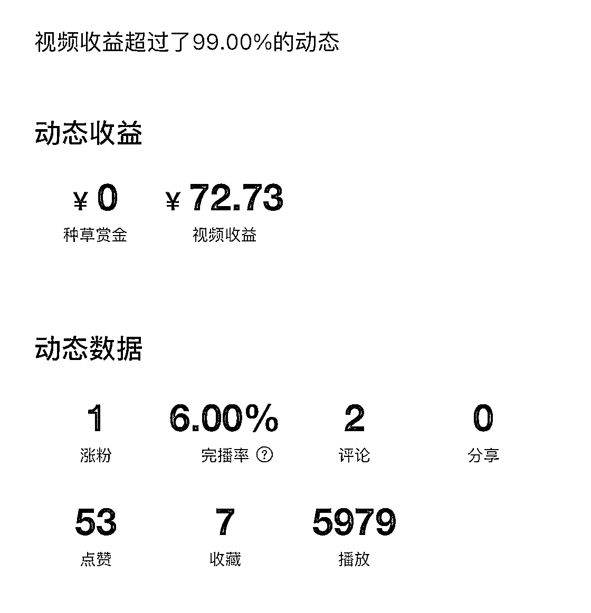
马上起了几个新号来做，因为有小红书运营基础，很快就跑通了变现，大概2个多月左右时间，收益已经有3～5k每个号
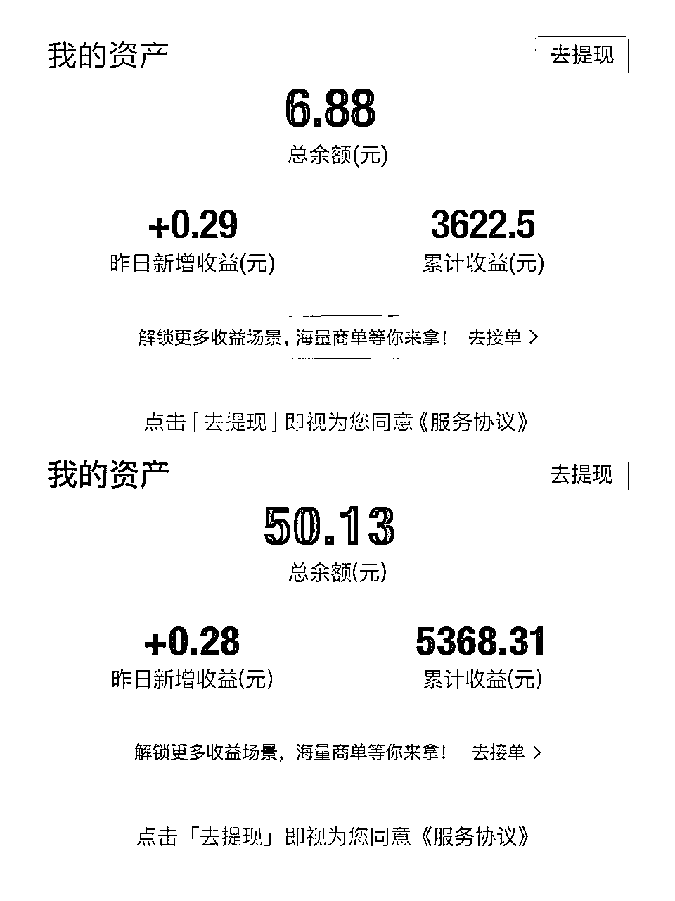
而且商家合作没断过，品牌方的产品都堆满一个角落，光是闲鱼卖产品，每个月也有1～2k的额外收入
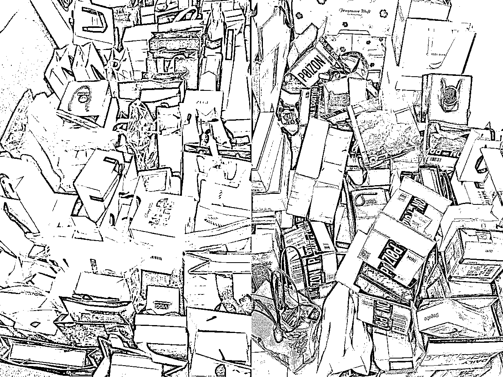
我一共5个号，仅是通过同步小红书笔记和接商单合作，每个月就能让我多赚1～2W，而且我在网上搜了一圈关于得物的帖子，好少！得物的好物分享的更是没有，一直想写一个从0～1的教程，一直拖，拖到现在
好，正文开始
得物有多种变现方式，甚至比小红书的变现方式更加丰富
新号做到100粉，就能开始接合作，得物有专门的品牌合作报名渠道，合作超级多，什么产品都有（大部分是穿搭、礼物、美妆、护肤、潮牌等产品）
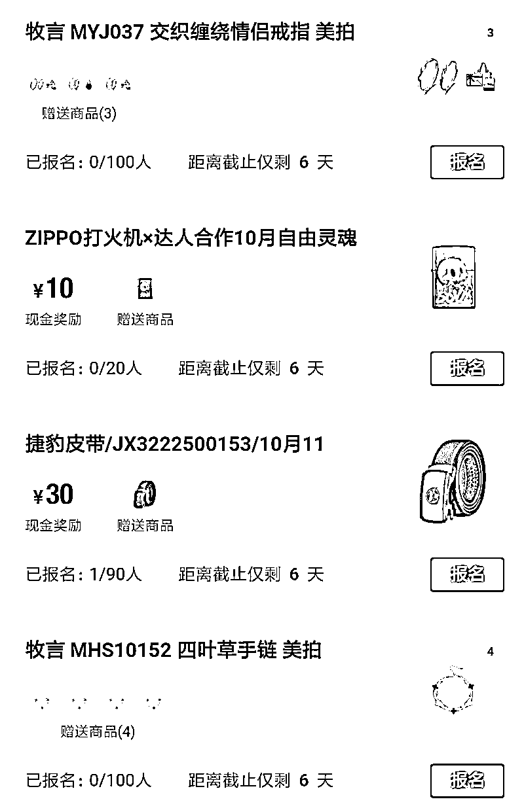
内容创作者也没有小红书卷，只要没限流，拍摄水平比买家秀好一些，都能接商单，放一个得物穿搭和小红书穿搭的对比图给你们感受下（随机截图）
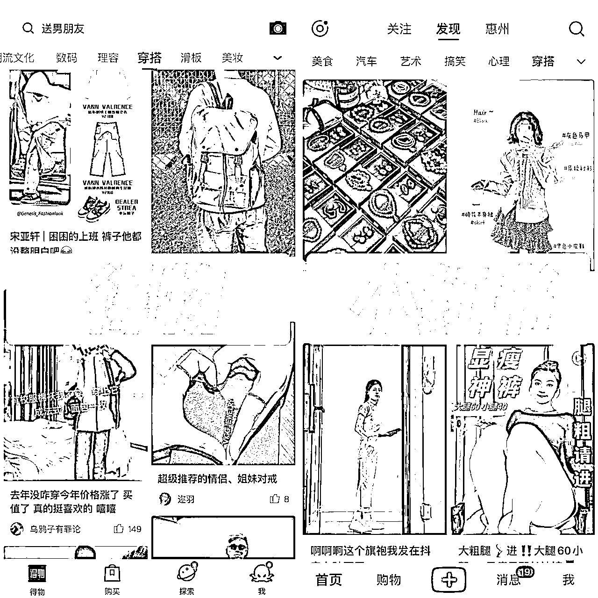
另外，得物商家合作基本上都要寄产品过来，有些产品自己用不上，在合作结束后可以挂闲鱼卖掉，这里每个月收入都有1～2k，而且都是新产品，很好卖
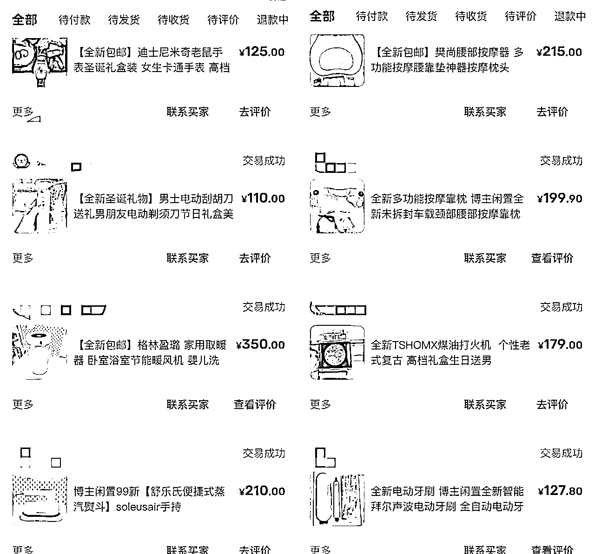
得物的笔记是可以挂产品链接的，除了接商单，还可以获得种草赏金，只要你推荐的产品有人购买，就有一些赏金分成，类似抖音精选联盟
得物即使是新号，也可以挂链接，所以没有100粉丝，也能通过赚笔记赏金来变现！
如果你发布的内容是视频，平台还会分一些视频激励，类似抖音中视频计划，但是需要先发布5个视频才能开通视频收益。
视频收益也非常可观，通过混剪、二创的方式，只赚视频激励，一个月也能多几千块钱
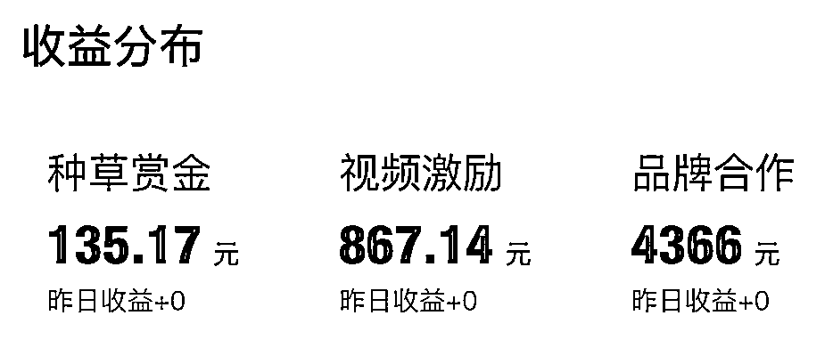
因为我自己做小红书IP号的缘故，所以也测试了一下得物引流，发现引流效果还真不错，互动比小红书还好一些
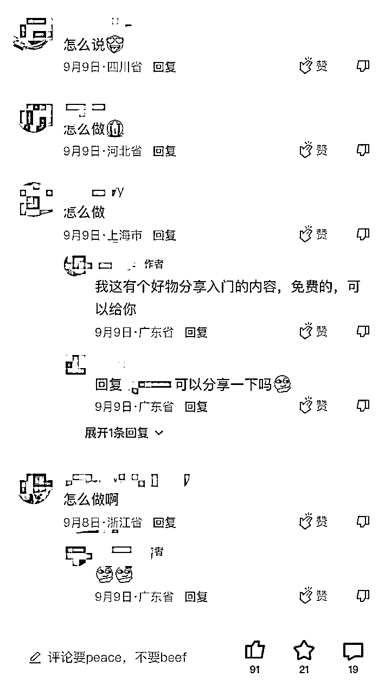
比较适合大部分人的变现就是以上这些，测试下来，核心变现方式是品牌合作、视频激励，种草赏金其实金额不是特别多，不如前面两个直接
运营前，需要先了解3个关键功能：成长任务、视频号、Poizon+
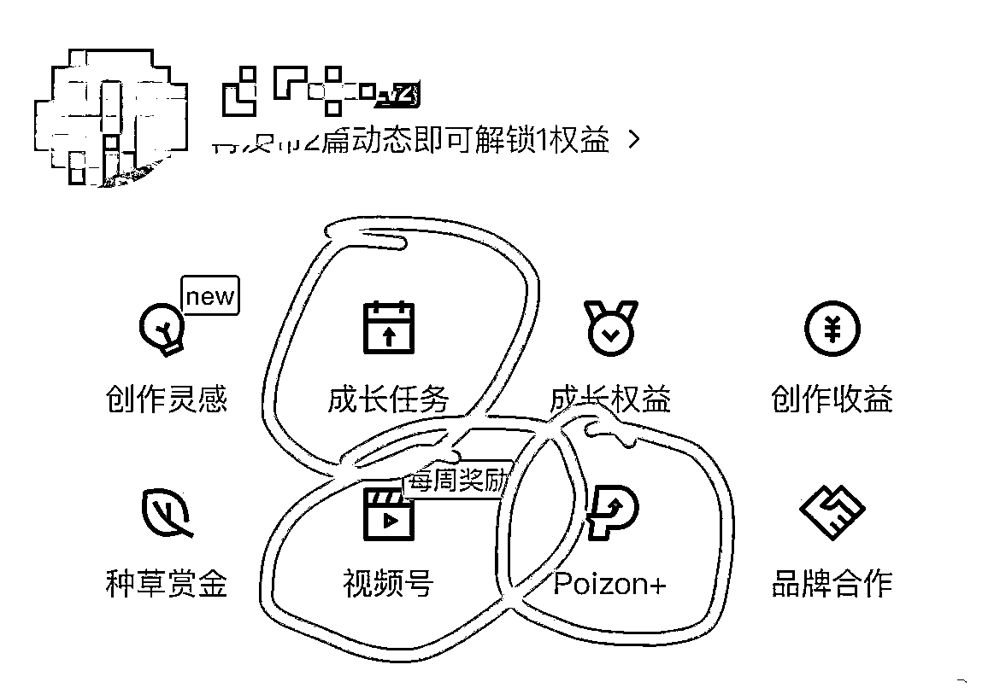
成长任务：平台会在这里发布很多成长任务，奖励一般有：流量券、购物津贴、优惠券
流量券就可以直接使用，会给对应笔记推流
购物津贴可以在你买东西时抵扣现金，优惠券就字面意思哈哈
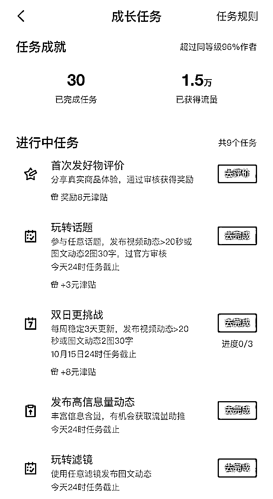
视频号：认证视频号后，每周会给5000流量券，可以给视频推流。另外，视频收益也可以在视频号入口看
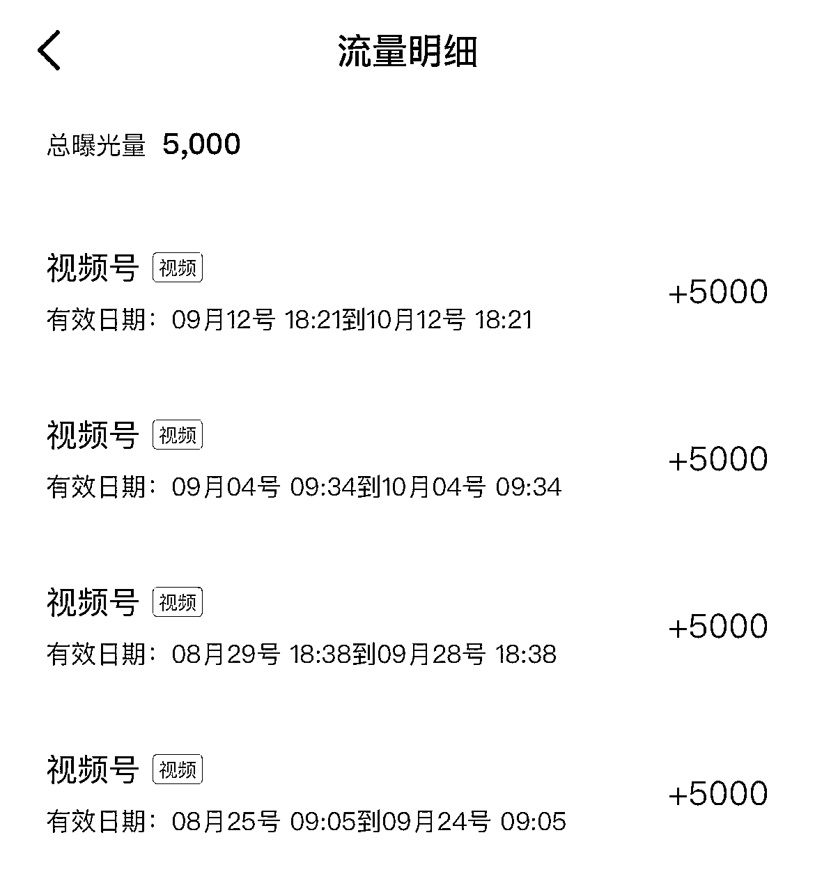
Poizon+：就是流量券的使用入口，里面可以看到你的流量券以及可以推广的内容
视频制作就跟做抖音、视频号这些一样，二创就可以，网上有大量教程，我就不多此一举了
重点说下搬运
得物内容还算很小众，知道能赚钱的人没有那么多。所以，搬运也有很大生存空间，直接搬运小红书、抖音的内容就好
但是需要注意几个问题：
（1）搬运前需要搜一下这个博主在得物有没有号，或者同标题发到得物看有没有人先搬运。得物对搬运管的还挺严的，如果有人先搬，很容易被下架
（2）不要搬有露脸的视频，真人出镜、真人露脸的都不要搬
得物的人群跟小红书、抖音有重叠，但平台属性不同，平台喜欢的内容也不一样，得物比较喜欢以下这些内容的视频：
……
我测试的是家居好物的赛道，视频收益还蛮可观，做视频收益的话，可以往这几个方向做
在没认证视频号之前，领取的流量券先别用，等视频号认证通过后，再去使用流量券
另外，不要每个视频都去用，挑收益高、互动高的视频去使用流量券
得物要达到100粉丝才能开通「好物分享官」，500粉丝可以开通「专业达人」
好物分享官：可以接品牌进入品牌合作广场，有很多品牌在这里招募达人，可以进去报名
专业达人：在好物分享官的权益上，还可以设置「定向合作」，可以自己定价格，等品牌报名合作。类似小红书的蒲公英。
因为得物的合作门槛是100粉丝，这里分享几个快速涨到100粉丝的方法：
得物互粉非常常见，很多新手都会通过互粉的方式快速到100粉丝。
但是现在官方对互粉打击很严格，不能明着说互粉，可以在一些比较多互粉的评论区中留言，或者看到别人有发互粉，自己就去关注
这个方式现在很严格，不太建议去互粉，100个粉丝真的好简单！
抖音非常多这种娱乐的营销号，一般都是发布综艺和一些娱乐类内容，这些内容发到得物也很容易涨粉，用户还是蛮喜欢看
做营销号的博主也不会关注到得物这个平台，所以直接搬运他们的内容也没什么问题
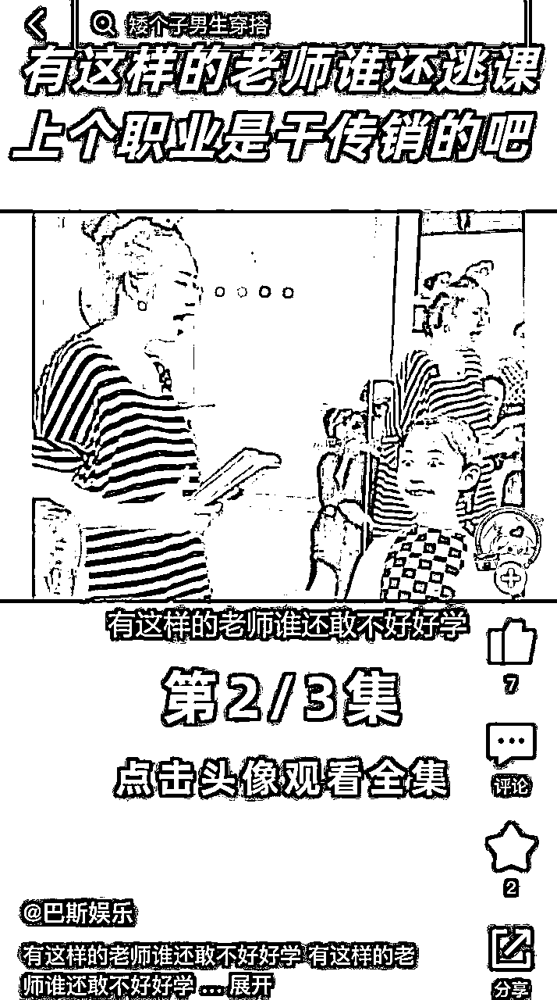
在得物分享影视剧，也很容易涨粉。除了视频，图文的影视剧也很容易涨粉。比如：女生必看的10部电视剧……
这种内容可以从小红书搬运，内容制作难度也不高
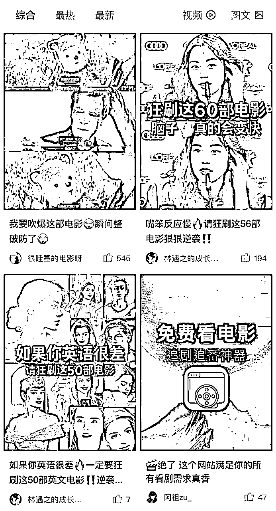
如果不会写文案、又不会找图片，还不喜欢看剧的，可以直接去小红书找到爆款影视剧，影视剧封面一般都是拼图，可以把拼图切开，上下调换位置重新拼一起，文案用ChatGPT去洗一下稿就好了
这里说的搬运，不只是影视号和营销号，还包括一些好物分享账号
想做什么赛道，就去搬什么内容。比如想做穿搭，就去小红书找一些穿搭的爆款笔记，但不露脸的，比如这种：
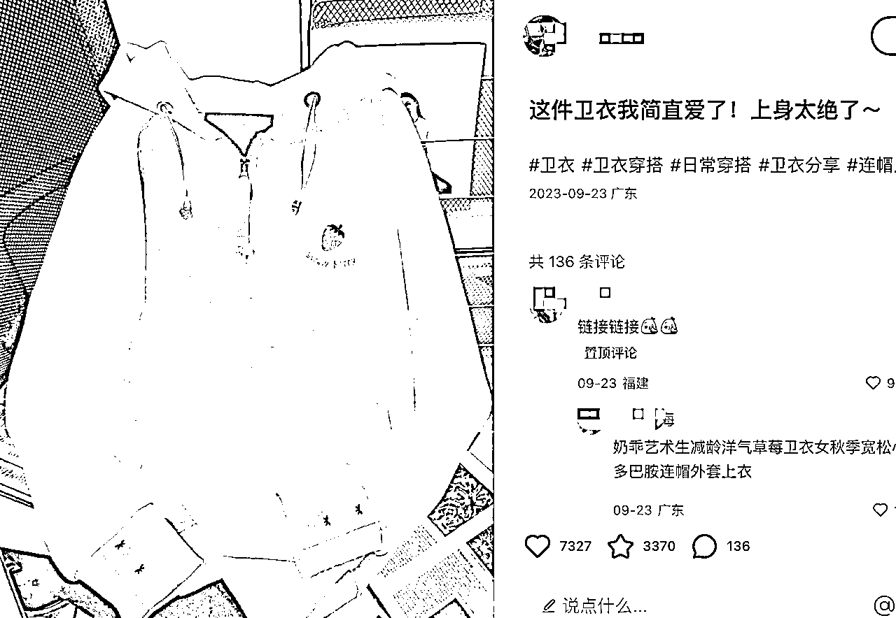
同理，做家居赛道、美妆赛道等都可以去找这些笔记搬运
需要注意的是，先看看有没有人提前搬了，或者博主在得物有没有账号
一般情况下，去搬运小博主，即博主粉丝量很低的，她们的爆文一般都没在得物发，所以可以直接搬
这种方式起号，非常容易成功，而且接广告的概率非常大，基本上达到100粉丝后不愁没广告
在得物的品牌合作有2种：投稿任务和定向合作
投稿任务：100粉丝后开通的品牌合作，会有个品牌广场，里面有很多品牌方的招募，可以找到自己喜欢的产品去报名，有些有费用，有些仅有产品赠送，价格不能自己定
定向合作：自己设置价格，一般数据好的时候，品牌方会主动来找合作，这时会按自己定的合作价格合作，类似小红书的蒲公英
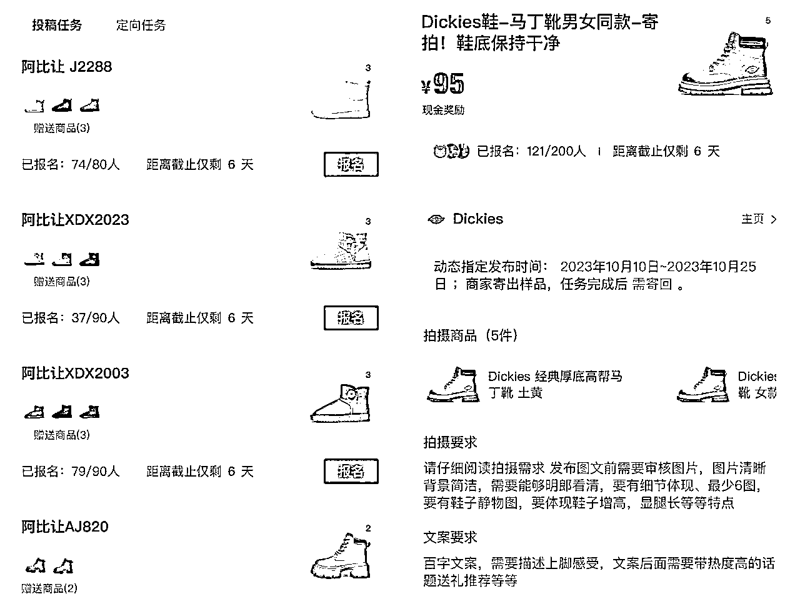
分享几个能快速接到商单的小技巧：
如果搬运影视号、娱乐号涨粉，主页里没有好物分享相关的笔记，直接去报名投稿任务的通过率都不高，这时需要增加一些跟产品相关的种草内容，实拍为主
原创内容：
根据自己想合作的品类去找产品，可以把自己的衣服、鞋子、包包、手机壳、耳机、音箱、护肤品等产品都拍一遍，拍摄不用很精美，只要比买家秀好些，基本都没问题
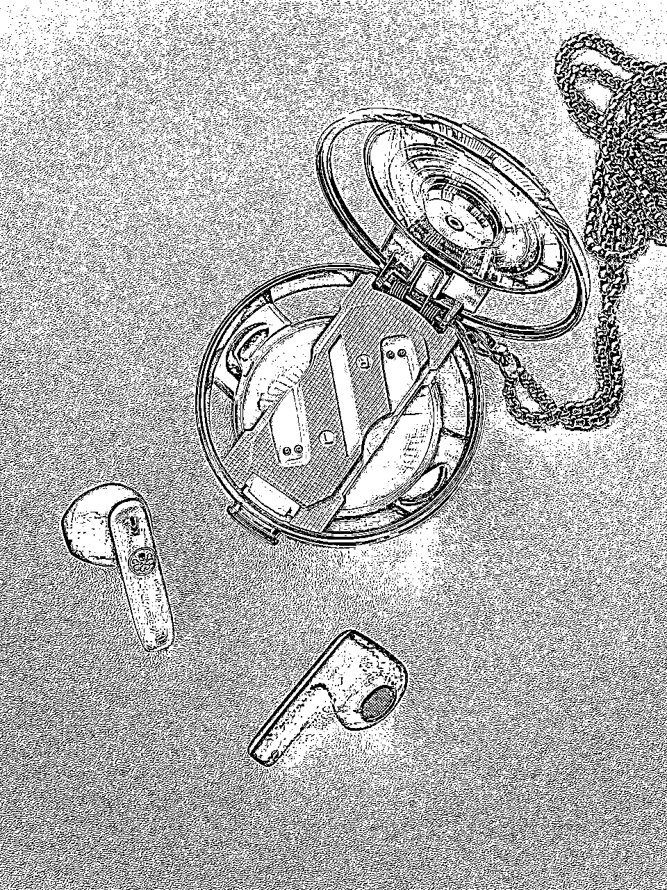
如果自己实在不会拍的，可以去小红书找同产品的博主，对着她的构图一模一样去拍摄就行
得物的内容大部分都不是很精美，拍摄的普通也能接到商单，而且你模仿多了，自己拍摄的水平也就提上去了
再给你们看下得物部分接品牌合作的内容质量：
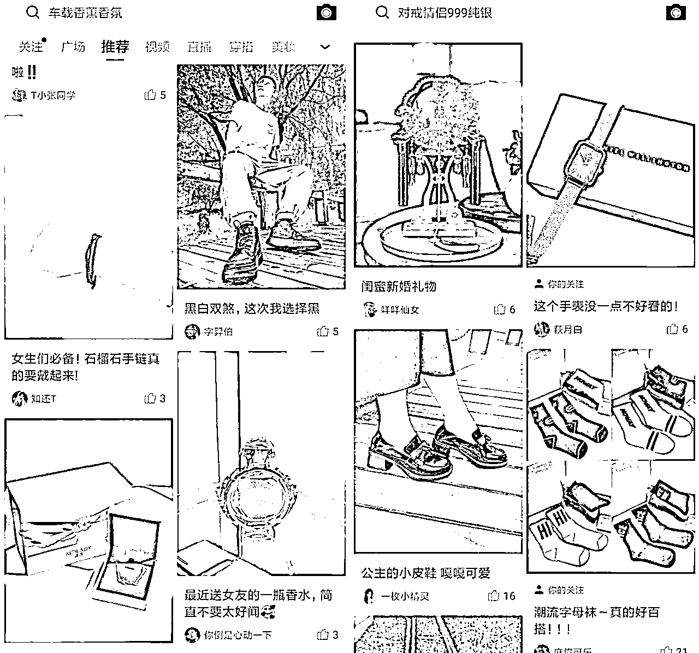
很多随手拍的内容在这都能通过合作审核，难度真的超低
搬运内容：
如果没产品前是在不想自己拍，可以根据自己想合作的品类，去小红书找博主的笔记搬，跟搬运起号的方式类似
另外，原创和搬运的数量都不用很多，大约有5～10篇左右，再去报名，通过率就非常高了
定向合作只要数据好，会有品牌方主动报名，前期合作比较多的还是投稿任务
投稿任务是要品牌方选人的，所以不是每次报名都会通过，但可以通过一些方式来提高通过率
加pr微信：
在报名后，马上添加pr微信，主动把自己的链接发给pr，并说明自己已经报名了合作
找通过率高的先报名：
一开始不要找很热门的品牌报名，要求都很高
前期没合作的时候可以找通过率高的品牌，比如产品价值低、没有费用的，这种品牌一般通过率都很高
品牌合作数量
正常情况下，每个账号每个月可以报名200次投稿任务，如果营销广告发的多，但拍摄质量实在太低，数据实在太差，又或者刷粉被抓了，那等级会降为“普通”，报名次数也会减少为20次
看合作要求
报名合作时，一定要看清楚合作要求。如果自己达不到的，一定不要去报名
比如，有些产品要求必须露脸，如果自己不想露脸的，就不要去报名了
以上，如果小伙伴实在没项目做的，完全可以考虑得物好物分享，天花板不算高，需要矩阵化操作，但好在非常容易跑通变现，而且知道这个项目的人不算很多，赛道没那么卷
最后祝大家发财～